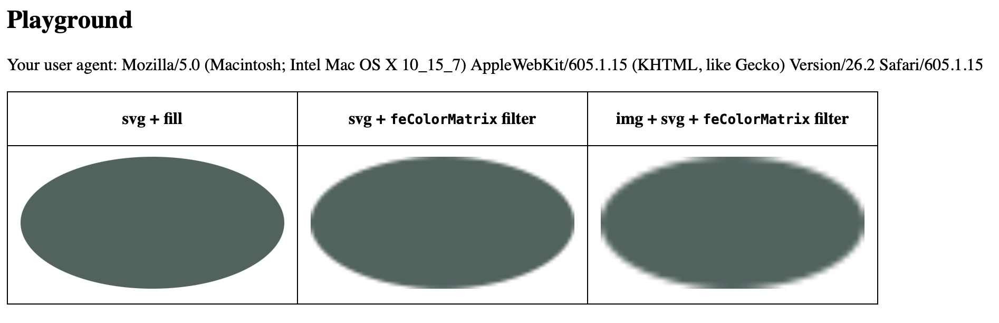
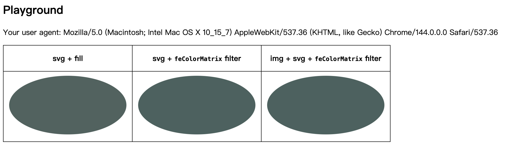
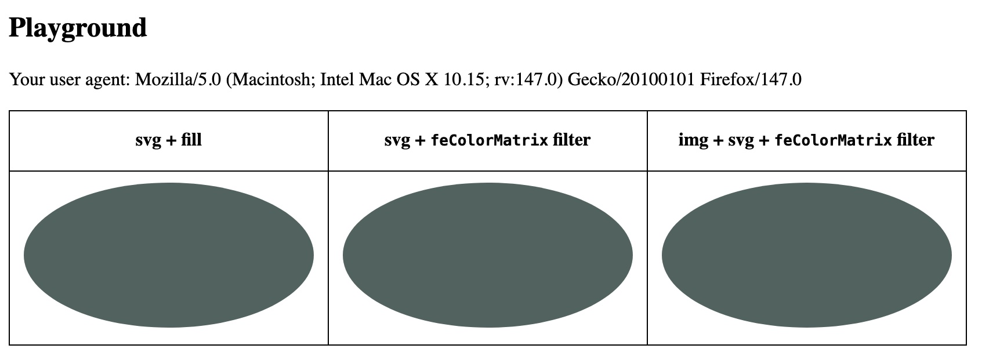

Explanation
Put a svg with feColorMatrix filter in <img> will cause serious resolution
problem.
Expected
Keep the resolution in all following situation:
- svg with fill color
- svg with fill color and
feColorMatrixfilter - img element with the second svg
Actual
The resolution svg getting worse when apply feColorMatrix filter and becomes shitty on the third
condition.
Environment
Safari 18.3 ~
Playground
Your user agent:
| svg + fill | svg + feColorMatrix filter |
img + svg + feColorMatrix filter |
|---|---|---|
Screenshot
Safari

Chrome

Firefox
